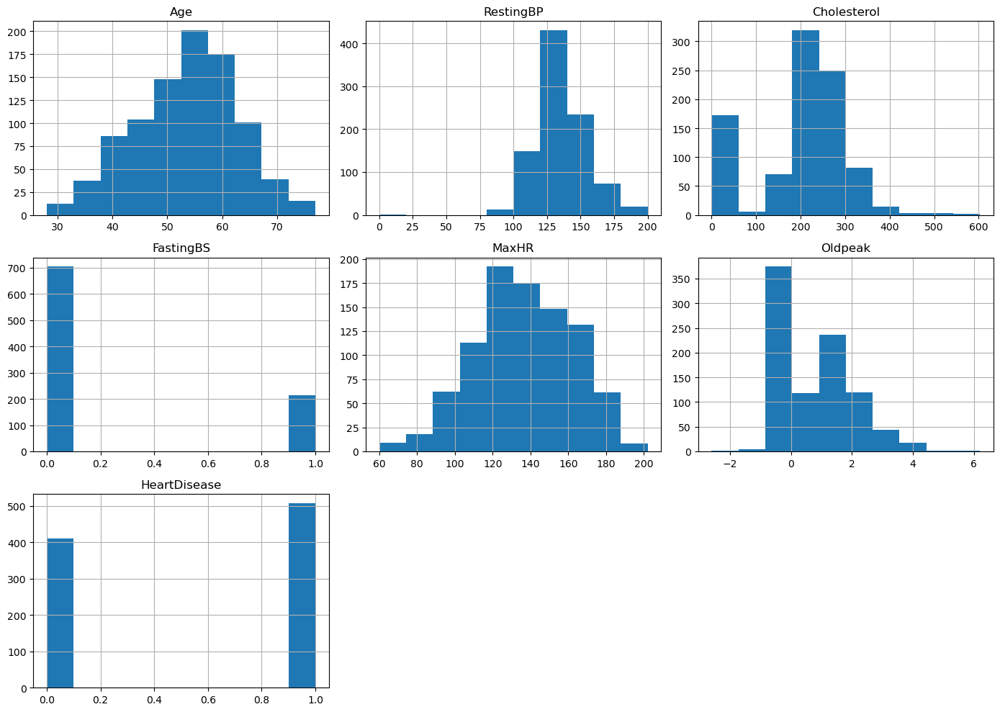
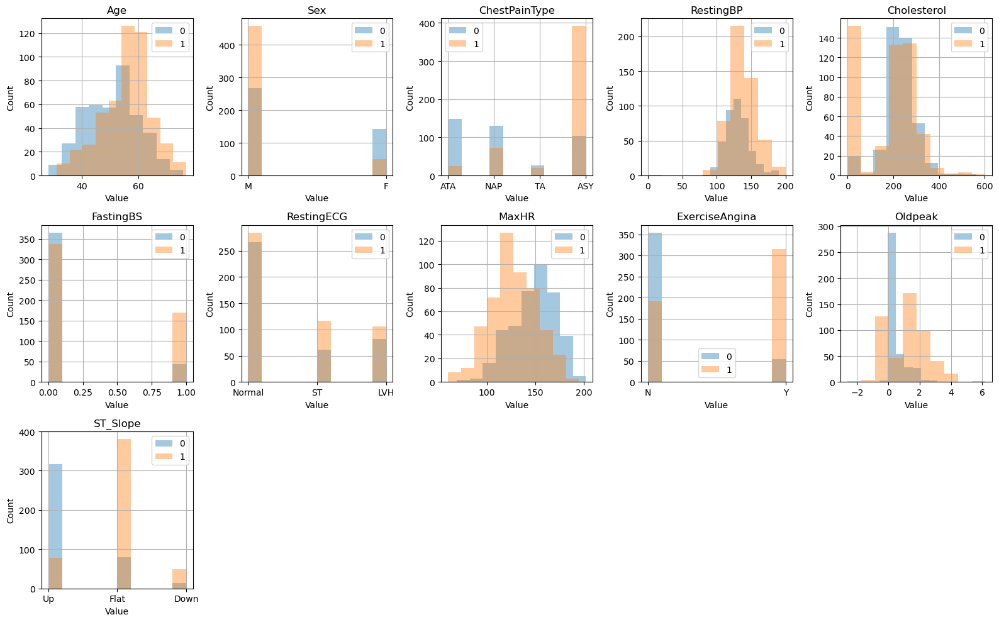
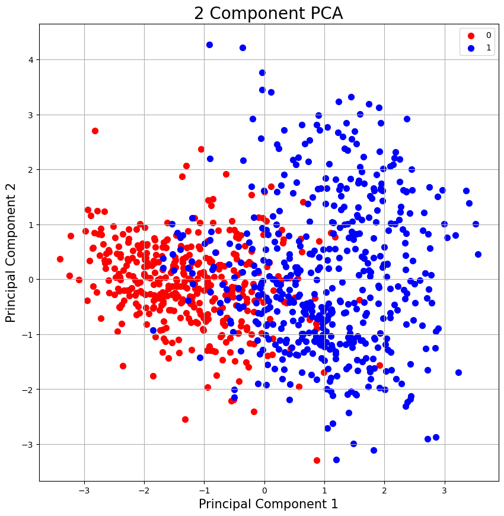
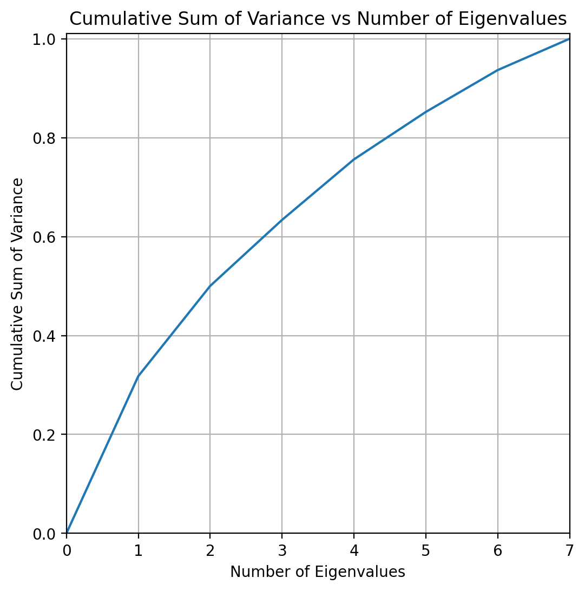

EDA and Data Cleaning#
import numpy as np
import pandas as pd
from matplotlib import pyplot as plt
from sklearn.decomposition import PCA
from sklearn.preprocessing import StandardScaler
Data from https://www.kaggle.com/datasets/fedesoriano/heart-failure-prediction#
# Import raw data
raw_data = pd.read_csv('../data/heart.csv')
raw_data.head()
| Age | Sex | ChestPainType | RestingBP | Cholesterol | FastingBS | RestingECG | MaxHR | ExerciseAngina | Oldpeak | ST_Slope | HeartDisease | |
|---|---|---|---|---|---|---|---|---|---|---|---|---|
| 0 | 40 | M | ATA | 140 | 289 | 0 | Normal | 172 | N | 0.0 | Up | 0 |
| 1 | 49 | F | NAP | 160 | 180 | 0 | Normal | 156 | N | 1.0 | Flat | 1 |
| 2 | 37 | M | ATA | 130 | 283 | 0 | ST | 98 | N | 0.0 | Up | 0 |
| 3 | 48 | F | ASY | 138 | 214 | 0 | Normal | 108 | Y | 1.5 | Flat | 1 |
| 4 | 54 | M | NAP | 150 | 195 | 0 | Normal | 122 | N | 0.0 | Up | 0 |
Check for NaN values in columns#
nan_count = raw_data.isna().sum()
print(nan_count)
Age 0
Sex 0
ChestPainType 0
RestingBP 0
Cholesterol 0
FastingBS 0
RestingECG 0
MaxHR 0
ExerciseAngina 0
Oldpeak 0
ST_Slope 0
HeartDisease 0
dtype: int64
raw_data.hist(figsize=(14, 10))
plt.tight_layout()
plt.savefig('../figures/eda_histograms.png')

Looking at class distributions#
fig,axes = plt.subplots(nrows=3,ncols=5,figsize=(16,10))
# loop through each column in the dataframe
for i, col in enumerate(raw_data.columns[:-1]):
# select the appropriate subplot axis based on the index i
ax = axes[i // 5, i % 5]
# plot a histogram of the column for each group in 'HeartDisease'
raw_data.groupby('HeartDisease')[col].hist(alpha=0.4, ax=ax)
# set the title, y-axis label, and x-axis label for the subplot
ax.set_title(col)
ax.set_ylabel("Count")
ax.set_xlabel("Value")
ax.legend(raw_data['HeartDisease'])
fig.delaxes(axes[2][1])
fig.delaxes(axes[2][2])
fig.delaxes(axes[2][3])
fig.delaxes(axes[2][4])
# adjust the spacing between the subplots for better readability
plt.tight_layout()
plt.savefig('../figures/eda_class_distributions.png')

PCA#
categorical_columns= ['Sex', 'ChestPainType','RestingECG', 'ExerciseAngina', 'ST_Slope' ]
X = raw_data.drop(columns=categorical_columns)
y = raw_data['HeartDisease']
scaler = StandardScaler()
X_standardized = scaler.fit_transform(X)
# Using PCA
pca = PCA(n_components = 7)
pca.fit(X_standardized)
PCA(n_components=7)In a Jupyter environment, please rerun this cell to show the HTML representation or trust the notebook.
On GitHub, the HTML representation is unable to render, please try loading this page with nbviewer.org.
PCA(n_components=7)
p_c = pca.fit_transform(X_standardized)
# print(principalComponents)
principal_df = pd.DataFrame(data=p_c, columns = ['PC1','PC2','PC3','PC4','PC5','PC6','PC7'])
final_df = pd.concat([principal_df, y],axis=1)
final_df.head()
| PC1 | PC2 | PC3 | PC4 | PC5 | PC6 | PC7 | HeartDisease | |
|---|---|---|---|---|---|---|---|---|
| 0 | -2.417053 | -0.508044 | -0.536672 | 0.492483 | -0.592140 | 0.263087 | 0.035454 | 0 |
| 1 | 0.138073 | -0.813523 | -0.245526 | 0.495047 | -1.577625 | -0.012082 | 0.836385 | 1 |
| 2 | -1.346575 | 0.120716 | 0.050249 | -1.194085 | -0.405928 | 1.707199 | -1.379748 | 0 |
| 3 | 0.768445 | -0.416296 | 0.876559 | -0.468257 | -0.780828 | 0.872467 | -0.231420 | 1 |
| 4 | -0.519631 | -0.324544 | -1.160150 | -1.158588 | -0.430199 | 0.032315 | -0.483574 | 0 |
# Plot
fig = plt.figure(figsize = (10,10))
ax = fig.add_subplot(1,1,1)
ax.set_xlabel('Principal Component 1', fontsize = 15)
ax.set_ylabel('Principal Component 2', fontsize = 15)
ax.set_title('2 Component PCA', fontsize = 20)
targets = [0,1]
colors = ['r', 'b']
for target, color in zip(targets,colors):
indicesToKeep = final_df['HeartDisease'] == target
ax.scatter(final_df.loc[indicesToKeep, 'PC1']
, final_df.loc[indicesToKeep, 'PC2']
, c = color
, s = 50)
ax.legend(targets)
ax.grid()
plt.savefig('../figures/2_component_pca.png')

## Variability of components
# Consider the first 4 components. How much variability of the model do these components take into account?
cum_var = pca.explained_variance_ratio_.cumsum()
cum_var=np.insert(cum_var,0,0)
k_features = list(range(0,X.shape[1]+1))
# Plot figure
fig = plt.figure(figsize=(6, 6), dpi=200)
ax = fig.add_subplot(1,1,1)
ax.plot(k_features,cum_var)
# plt.rc('axes', titlesize=14)
# plt.rc('axes', labelsize=12)
ax.set_xlabel("Number of Eigenvalues")
ax.set_ylabel("Cumulative Sum of Variance")
ax.set_title("Cumulative Sum of Variance vs Number of Eigenvalues")
ax.set_xlim([0,7])
ax.set_ylim([0,1.01])
ax.grid()
plt.savefig('../figures/sum_of_variance.png')
